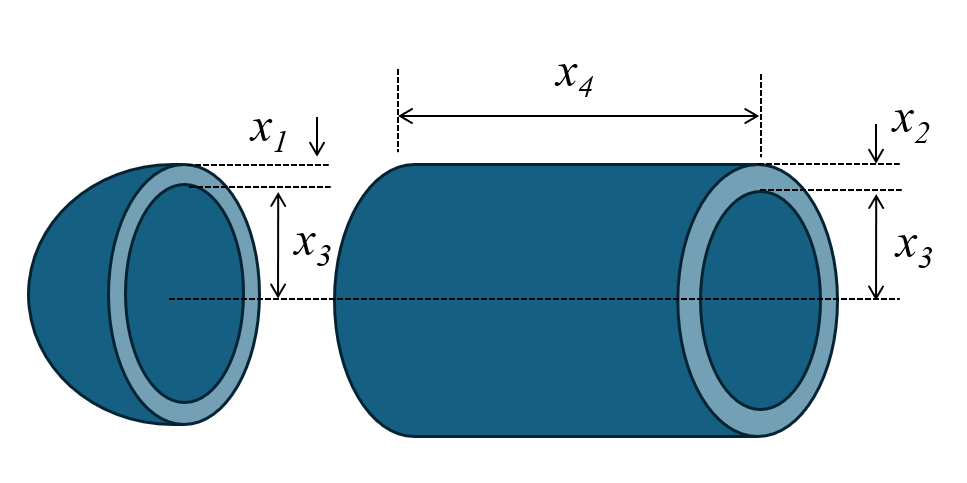

Pressure Vessel Design Optimization¶
Problem Overview¶
The pressure vessel design problem involves minimizing the total cost of materials, forming, and welding of a cylindrical pressure vessel with hemispherical ends. This is a well-known benchmark problem in engineering optimization that involves four design variables and four inequality constraints.

The pressure vessel consists of a cylindrical section with two hemispherical heads at both ends. The design must satisfy constraints related to material thicknesses and minimum volume requirements while minimizing the total cost.
Objective¶
Minimize the total cost of the pressure vessel:
\(\text{Cost} = 0.6224 x_1 x_3 x_4 + 1.7781 x_2 x_3^2 + 3.1661 x_1^2 x_4 + 19.84 x_1^2 x_3\)
This cost function includes: - Material cost for the cylindrical shell - Material cost for the hemispherical heads - Forming and welding costs
Where:
- \(x_1\) = thickness of the head (inches)
- \(x_2\) = thickness of the shell (inches)
- \(x_3\) = inner radius of the vessel (inches)
- \(x_4\) = length of the cylindrical section (inches)
Design Variables¶
| Variable | Description | Range |
|---|---|---|
| \(x_1\) | Thickness of the head | [0.0625, 10] |
| \(x_2\) | Thickness of the shell | [0.0625, 10] |
| \(x_3\) | Inner radius | [10, 200] |
| \(x_4\) | Length of cylindrical section | [10, 240] |
Constraints¶
-
Shell thickness constraint:
\(g_1(x) = -x_1 + 0.0193 x_3 \leq 0\)
-
Head thickness constraint:
\(g_2(x) = -x_2 + 0.00954 x_3 \leq 0\)
-
Volume constraint:
\(g_3(x) = -\pi x_3^2 x_4 - \frac{4}{3} \pi x_3^3 + 1,296,000 \leq 0\)
-
Length constraint:
\(g_4(x) = x_4 - 240 \leq 0\)
Problem Requirements¶
- The vessel must have a minimum volume capacity of 1,296,000 cubic inches.
- The thicknesses \(x_1\) and \(x_2\) are available in discrete values that are multiples of 0.0625 inches, which is the standard thickness of rolled steel plates.
- The radii and length variables can take on any continuous values within their bounds.
Optimal Solution¶
Several optimal solutions have been reported in the literature:
Best known solution:
- \(x_1 = 0.8125\) (shell thickness)
- \(x_2 = 0.4375\) (head thickness)
- \(x_3 = 42.0984\) (inner radius)
- \(x_4 = 176.637\) (length)
- Cost = \(6,059.714\) (objective function value)
Implementation with PyEGRO¶
import numpy as np
from PyEGRO.optimize.GA import run_deterministic_optimization, save_optimization_results
# Objective function
def pressure_vessel_cost(X):
X = np.atleast_2d(X)
costs = []
for x in X:
x1, x2, x3, x4 = x
cost = (
0.6224 * x1 * x3 * x4 +
1.7781 * x2 * x3**2 +
3.1661 * x1**2 * x4 +
19.84 * x1**2 * x3
)
costs.append(cost)
return np.array(costs)
# Constraint functions
def g1_shell_thickness(X):
X = np.atleast_2d(X)
return np.array([-x[0] + 0.0193 * x[2] for x in X])
def g2_head_thickness(X):
X = np.atleast_2d(X)
return np.array([-x[1] + 0.00954 * x[2] for x in X])
def g3_volume(X):
X = np.atleast_2d(X)
return np.array([
-np.pi * x[2]**2 * x[3] - (4.0/3.0) * np.pi * x[2]**3 + 1296000
for x in X
])
def g4_length_limit(X):
X = np.atleast_2d(X)
return np.array([x[3] - 240 for x in X])
# Define the problem info
data_info = {
'variables': [
{
'name': 'x1',
'vars_type': 'design_vars',
'range_bounds': [0.0625, 10],
'description': 'Head thickness (x1)'
},
{
'name': 'x2',
'vars_type': 'design_vars',
'range_bounds': [0.0625, 10],
'description': 'Shell thickness (x2)'
},
{
'name': 'x3',
'vars_type': 'design_vars',
'range_bounds': [10, 200],
'description': 'Inner radius (x3)'
},
{
'name': 'x4',
'vars_type': 'design_vars',
'range_bounds': [10, 240],
'description': 'Length of cylindrical section (x4)'
}
]
}
# Constraint functions
constraint_functions = [
g1_shell_thickness,
g2_head_thickness,
g3_volume,
g4_length_limit
]
# Run optimization
results = run_deterministic_optimization(
data_info=data_info,
true_func=pressure_vessel_cost,
constraint_funcs=constraint_functions,
pop_size=400,
n_gen=100,
sampling_method='lhs',
crossover_prob=0.9,
crossover_eta=15,
mutation_eta=20
)
# Save results
save_optimization_results(
results=results,
data_info=data_info,
save_dir='PRESSURE_VESSEL_RESULTS'
)
# Print best solution
print("\nOptimized Solution:")
print(f" x1: {results['best_solution'][0]:.6f}")
print(f" x2: {results['best_solution'][1]:.6f}")
print(f" x3: {results['best_solution'][2]:.6f}")
print(f" x4: {results['best_solution'][3]:.6f}")
print(f"Objective Value: {results['best_fitness']:.6f}")
print(f"Feasible: {results['is_feasible']}")
References¶
- Kannan, B.K., & Kramer, S.N. (1994). An augmented Lagrange multiplier based method for mixed integer discrete continuous optimization and its applications to mechanical design. Journal of Mechanical Design, 116, 405-411.
- Coello Coello, C.A. (2000). Use of a self-adaptive penalty approach for engineering optimization problems. Computers in Industry, 41(2), 113-127.
- He, Q., & Wang, L. (2007). An effective co-evolutionary particle swarm optimization for constrained engineering design problems. Engineering Applications of Artificial Intelligence, 20(1), 89-99.
- Rao, S.S. (2019). Engineering Optimization: Theory and Practice. 5th Edition, John Wiley & Sons.
- Cagnina, L. C., Esquivel, S. C., & Coello, C. A. C. (2008). Solving engineering optimization problems with the simple constrained particle swarm optimizer. Informatica, 32(3).